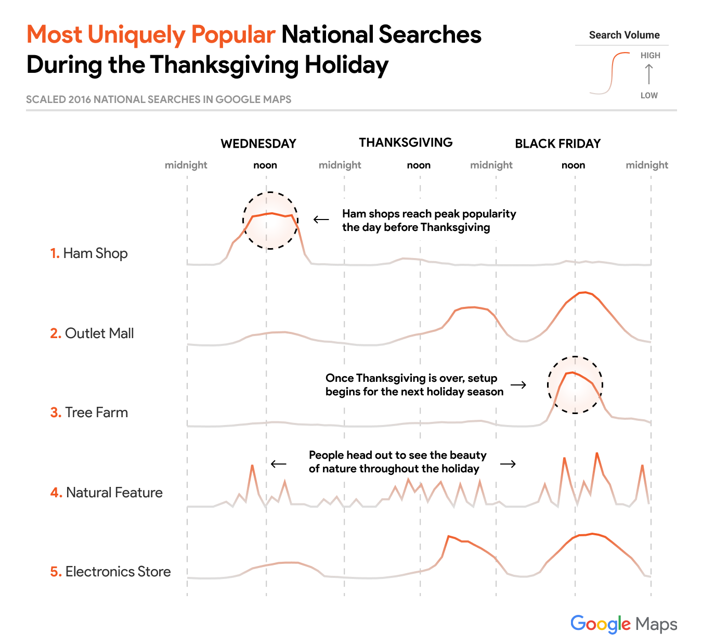

For millions of Americans, Thanksgiving means turkey, parades, family, and the road-trip to reach it all. While everyone’s final holiday destination is unique, there are many common stops along the way. Using data from Google Maps, we’re providing insight into the places people visit around the holidays and the best times to get on (or stay off) the road.
Google Maps Search Trends
To gain a better understanding of the places that people intend to visit throughout the holidays, we can analyze the number of times that people request directions to a location using Google Maps.
{kind=link}
Nationally, the most commonly searched-for location during the Thanksgiving holiday is a department store. But the popularity of department stores isn’t unique to Thanksgiving – they’re pretty popular throughout the year. If instead we focus on locations that are searched during the holiday far more than normal, we find that ham shops are the most popular. Continuing this trend, we can find the most uniquely popular searches by state (Floridians are in need of Airport Shuttle Services) or city (people in Portland, Oregon are big fans of donuts). Keep reading to find the most uniquely popular searches in your area.
National Searches
Nationwide, these are the most uniquely popular stops during the Thanksgiving holiday. If you’re looking to get in on the fun but avoid the crowds, try to visit these locations when the search volume is low.
{kind=link}
Uniquely Popular Local Searches
Food and Drink
In the U.S., few holidays can compete with Thanksgiving when it comes to food. While many families will enjoy a large meal on Thanksgiving, Americans still need help navigating to a variety of food and drink locations throughout the holiday period. Find out which types of food are most uniquely popular in your area on each day.
Uniquely Popular Food and Drink Search Trends in
Uniquely Popular Food and Drink Search Trends Compared to the Rest of the US
on
Compared to the Rest of the US
Entertainment
Whether you’re a football fan or just eagerly anticipating this season’s newest hit movies, Thanksgiving is also a time to enjoy entertainment. Find which types of entertainment venues and activities are most uniquely popular in your area on each day.
Uniquely Popular Entertainment Search Trends in
Uniquely Popular Entertainment Search Trends Compared to the Rest of the US
on
Compared to the Rest of the US
Shopping
The day after Thanksgiving, colloquially known as “Black Friday”, is one of the biggest shopping days of the year. Take a look at which types of shopping are most uniquely popular to your area.
Uniquely Popular Shopping Search Trends in
Uniquely Popular Shopping Search Trends Compared to the Rest of the US
on
Compared to the Rest of the US
Traffic Patterns
You may be used to your area’s traffic patterns during a typical week, but holiday travelers move on a different schedule. With typical traffic levels as a baseline, here is when you can expect traffic to be heavier than normal in your area.

{kind=link}
Avoiding Traffic
On a typical weekday, we can try to avoid traffic in our area by staying off the road during rush hour. But when is the rush during a holiday period? With everyone on their family’s unique schedule, it can be hard to pinpoint the best times to travel. Here’s what we recommend based on last year’s Thanksgiving travel data.
When Should I Leave
For My Holiday Road-Trip?
Before Thanksgiving
- Best Time:
- Worst Time:
After Thanksgiving
- Best Time:
- Worst Time:
Whether you’re planning to see what all the buzz is about at New York’s bagel shops or you’re just trying to skip the gridlock, have a very Happy Thanksgiving.